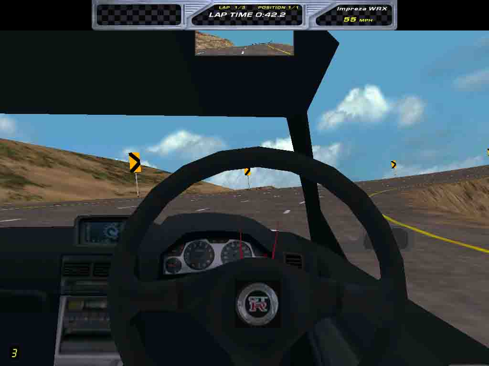
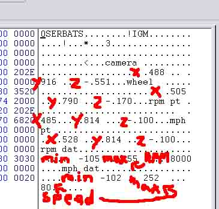

Step 14: Fixing the Dashboard
***WARNING***
This section REQUIRES a hex editor!
You may have noticed now that you can not see the dashboard. This is because you are missing cockpit.tab, an important file that defines the dashboard.
Included are two cockpit.tabs, one for right-handed dashboards, and one for left-handed dashboards.
You need to rename it to cockpit.tab to be effective.
Click for a Left-Handed Dashboard Cockpit.tab
Click for a Right-Handed Dashboard Cockpit.tab
Since this car is a JDM (Japanese Domestic Model), obviously the dashboard is right-handed.
First, add the tab, cockpit model, needle, and wheel to your reslist, then pack and go.
When you race, switch to the Cockpit view to see what's happening. This will give you a general gist of what is happening.
WOAH! That's way off!

I need to move everything forward, the camera to the left a little, and line up the wheel and needles!
Open the TAB file in your HEX editor. Just like the car's long name, you are going to replace values on the text side.

Note the red marks, they point to what is what. Basically, those are 3D coordinates that specify the position of the dials, camera, and wheel, then the ranges on the dials, min angle, max angle, and what value is at max. Just guess and check, saving, packing, and testing after each major guesstimate.
It may take an hour or two, so be patient.
Finally! The dashboard is the way I want it!
Once you are lined up to go, you can move ONWARD.